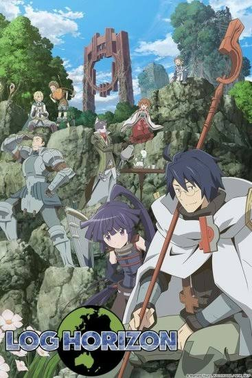

Sword Art Online
genres:Fantasy, Isekai, Action, Adventure, Romance,Psychological
A virtual reality multiplayer online role-playing game called sword art online.
Ten THousand players logged on, only to check that they can not log out and he only way to get out of the game
is to fight the last Boss o the last level, they have to tread carefully as if they health bar runs out and die
they die in real world to.

Log Horizon
Genres: Fantasy, Isekai,Adventure, Science Fiction

Attack on Titan
Genres: Dark Fantasy, Action Fiction,Apocolyptic and post-apocalyptic
Eren Jaeger lives with Mikasa Akerman and best friend Armin Arlet in the town Shiganshina adhajent to Wall Maria.
Surviving between Three circular walls that protect humanity from man-eating Titans.
When Wall Maria is breached Titans filled the place forcing humanity to retreat behind Wall Rose.
After a titan eats Eren mother, a vengeful Eren enlisted in military along with Mikasa and Armin.
That is how the Survival of humanity began.